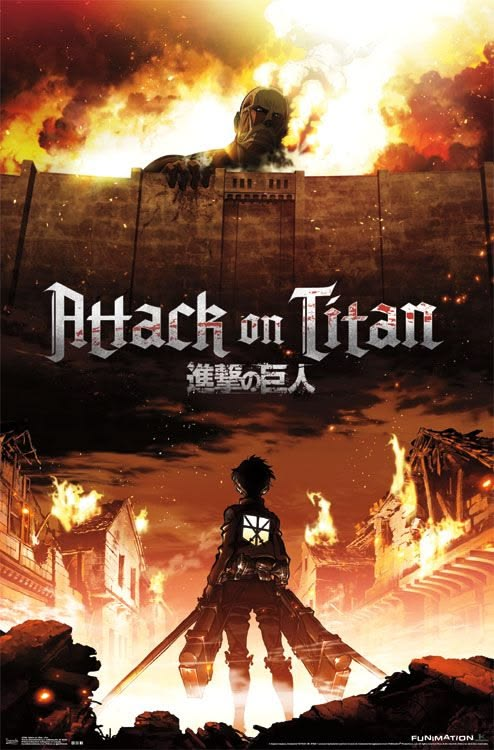

Aksi · Shounen
Attack on Titan
Dunia yang dikelilingi tembok raksasa ini nggak pernah kehabisan cara bikin jantung berdebar. Plot twist demi plot twist bikin susah berhenti walau ini tontonan ulang ke sekian kali.